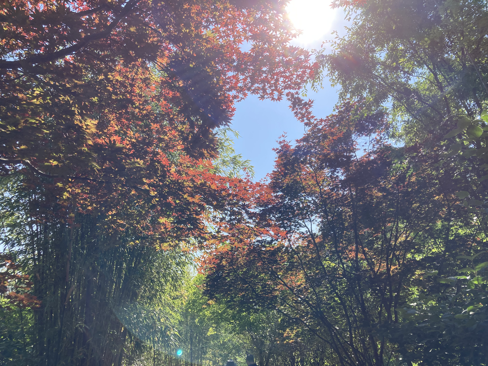
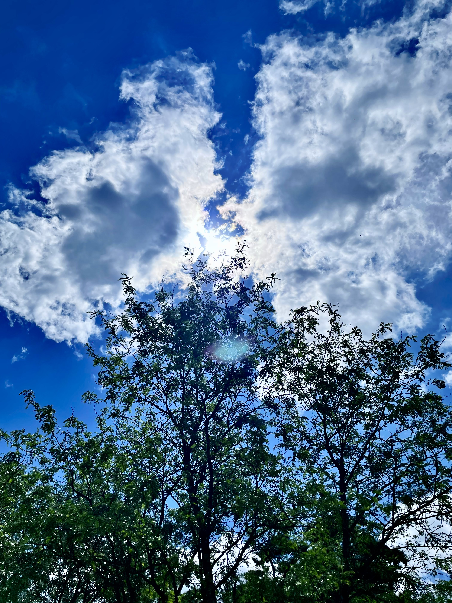
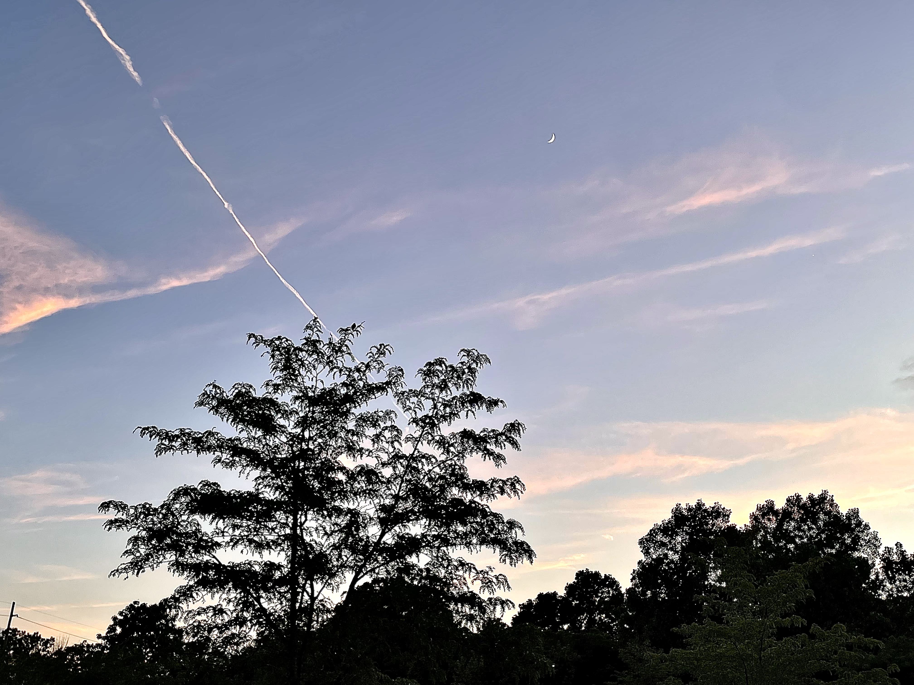
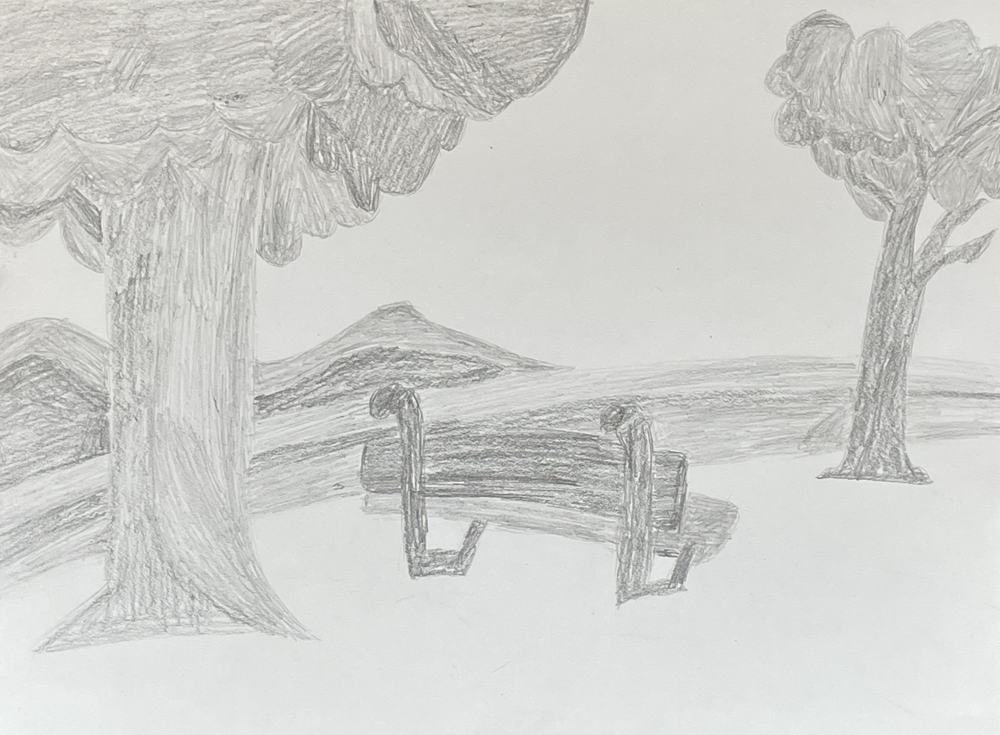

Introduction
This is a website for a quiz. It will showcase who I am, my projects, photos about me and with personal links.
About

Hello, my name Nehemiah Ingram. I am 17 and a senior at Fishers High School. I am pursuing my goals to take computer science classes to go to college and study in IT. A reason why I want to go into IT is because I have spent majority of my life with technology and I want to use that for my advantage and use all the knowledge I have for it and pursue in it. I have been working hard to get to where I am today even with my disability being ADHD making it hard for me to concentrate at my work. My interests include videogames, art/drawing, photography. They are also things I do within my free time. What motivates me is what helps me to push through my obstacles and help me ge through to where I want to be today. Another thing about me is that I have volunteered within many different programs such as Veterans Administration voluenteering in the VA hospital. I voluenteered for Lambswear Children’s Clothing Pantry providing clothes and other necessities for children in need who don't have stuff some of us do. Last thing to know about me is that I am one of the leaders within the E-sports club. I organize activites and ensure the club is a safe and fun enviorment for everyone.
Photos I have token in the past
In Washington DC

I was walking on a trail of these beautiful trees and I wanted to take a snapshot of it because of it's beautiful scenary and lighting.This one is my personal favorite out of them all.
Trees and the sky

This photo was when I was at my dad's apartment and thought the positioning with the trees and sky was perfect for a photo.
Sunset apporching

I saw sunset arriving and deciding to take a picture of the sky while also capturing different elements within the photo too. Such as the clouds, trees and the line in the sky.
On my way home
Walking home I saw the deep shade of blue and the cloud emerging with the sun and decided to take a photo of it perfectly capturing everything within the frame.
Projects
Here will be previous projects I have made in the past.
My previous website
The wiki page that helped me make the history section of my website.
This is my website from Website and Database that includes HTML, CSS and Javascript. This is a website about videogames. More specifically about the biggest ones that help the gaming industry become what it is today. There will be a page about how gaming as a whole started and then other webpages will be about more specific franchises.
Art Project

This is where I got inspiration from.This is an art project I had to do for Intro to 2D Art where I had to draw scene in fall so I decided to draw. A bench on a with hills in the background and trees within the scene.
Photography project

This is the phone I took the pictures with.
This is for a project in Photography. I took a photo of myself and then added an overlay of a picture I took in the park near the school.
“I certify that the content included in this portfolio/website is my own original work (or is cited accurately) and accurate to my knowledge. Work included which was conducted as part of a team or other group is indicated and attributed as such the other team members are named and a true description of my role in the project is included. {Nehemiah Ingram - Electronic Signature}”
Layout by Bootstrap